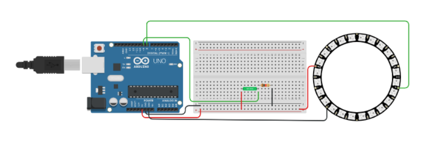

#include <Adafruit_NeoPixel.h>
#define PIN 8
#define NUMPIXELS 24
int tsensor = 9;
int i = 0;
Adafruit_NeoPixel pixels = Adafruit_NeoPixel(NUMPIXELS, PIN, NEO_GRB + NEO_KHZ800);
uint32_t color = pixels.Color(255, 0, 0);
uint32_t mainColor = pixels.Color(0, 255, 0);
void setup()
{
uint32_t middle = pixels.Color(0, 0, 255);
Serial.begin(9600);
pinMode(tsensor,INPUT);
pixels.begin();
pixels.setBrightness(100);
pixels.show();
for (int i = 0; i < NUMPIXELS; i++) {
pixels.setPixelColor(i, mainColor);
}
}
void loop() {
if (digitalRead(tsensor) == HIGH) {
i++;
pixels.setPixelColor(i, color);
if (i > NUMPIXELS) {
i = NUMPIXELS;
}
} else {
pixels.setPixelColor(i, mainColor);
if (i > 0) {
i--;
}
}
Serial.println(i);
pixels.show();
delay(120);
}
Результат: Чем дольше датчик будет наклонен, тем больше светодиодов загорится на кольце NeoPixel. Ссылка на проект
 Обратно